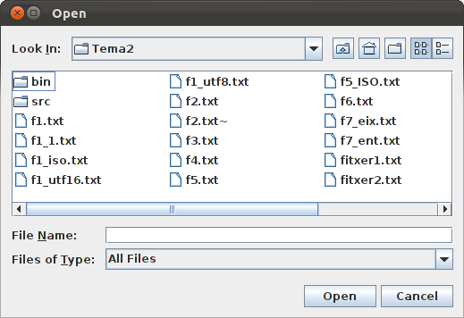
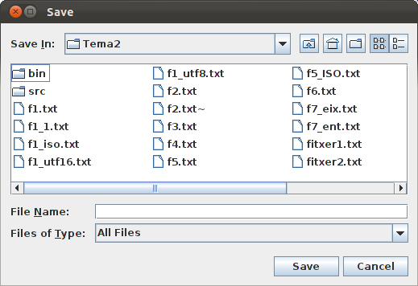

6.2.- JFileChooser
El component JFileChooser és capaç d'obrir un diàleg per a poder seleccionar un fitxer permetent navegar pel sistema de fitxers. Té dues variant: showOpenDialog i showSaveDialog, amb alguna diferència que ara comentarem.
showOpenDialog()
És un mètode de JFileChooser que obre un diàleg per a seleccionar un fitxer. Posteriorment:
- El fitxer seleccionat l'obtindrem amb getSelectedFile(), que torna directament el file.
- El mètode retorna un valor dient si s'ha seleccionat o no un fitxer (podria haver-se cancel·lat o tancat el diàleg). Aquest valor el podem compara amb la constant JFileChooser.APPROVE_OPTION
El següent codi tan senzill ens permet seleccionar un fitxer, i traure el seu nom:
JFileChooser fc = new JFileChooser();
int r = fc.showOpenDialog(this);
if (r == JFileChooser.APPROVE_OPTION){
System.out.println("Fitxer seleccionat: " + fc.getSelectedFile().getName());
}
else
System.out.println("No s'ha seleccionat res");

Si ens definim l'objecte JFileChooser com una variable que es puga accedir tota l'estona, d'una vegada a l'altra podrem mantenir el fitxer seleccionat. Així doncs, en el següent exemple, si anem navegant per a seleccionar un determinat fitxer, i si apretem el botó una altra vegada per a navegar, mantindrà el subdirectori seleccionat la primera vegada, ja que el JFileChooser és el mateix i no s'ha definit una altra vegada.
import java.awt.FlowLayout;
import java.awt.GridLayout;
import java.awt.event.ActionEvent;
import java.awt.event.ActionListener;
import javax.swing.JButton;
import javax.swing.JFileChooser;
import javax.swing.JFrame;
import javax.swing.JLabel;
import javax.swing.JPanel;
public class Finestra extends JFrame implements ActionListener{
JButton boto1 = new JButton("Botó 1");
JFileChooser fc = new JFileChooser();
public void iniciar(){
setSize(400,200);
getContentPane().setLayout(new GridLayout(2,1));
JPanel panell1 = new JPanel(new FlowLayout());
JPanel panell2 = new JPanel(new FlowLayout());
getContentPane().add(panell1);
getContentPane().add(panell2);
panell1.add(new JLabel("Programa principal. Per anar al diàleg apreta el botó"));
panell2.add(boto1);
this.setDefaultCloseOperation(JFrame.EXIT_ON_CLOSE);
setVisible(true);
boto1.addActionListener(this);
}
@Override
public void actionPerformed(ActionEvent e) {
if (e.getSource()==boto1){
int r = fc.showOpenDialog(this);
if (r == JFileChooser.APPROVE_OPTION){
System.out.println("Fitxer seleccionat: " + fc.getSelectedFile().getName());
}
else
System.out.println("No s'ha seleccionat res");
}
}
}
showSaveDialog()
És un diàleg idèntic a l'anterior, excepte que el títol de la finestra de diàleg i el botó principal diran Guardar en compte d'Obrir.

Recordeu que aquestos dos procediments no obren ni guarden el fitxer, únicament el seleccionen.
Llicenciat sota la Llicència Creative Commons Reconeixement NoComercial SenseObraDerivada 2.5